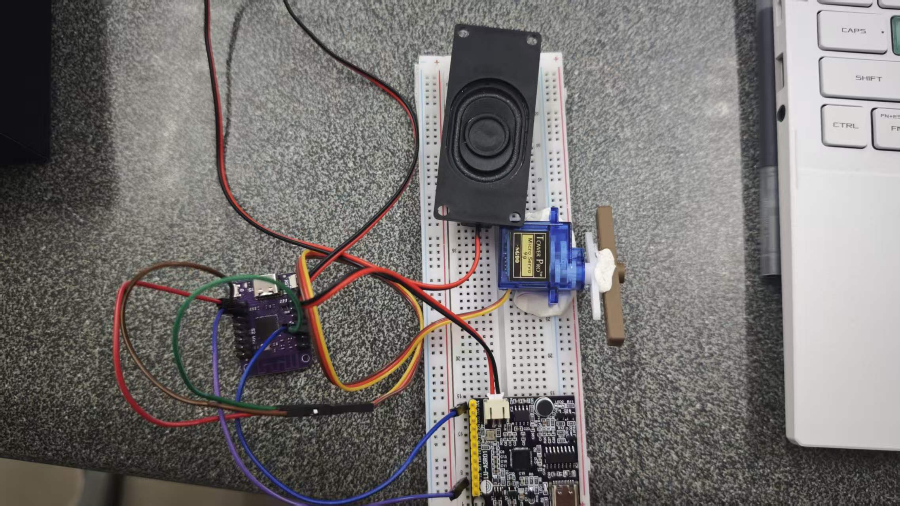
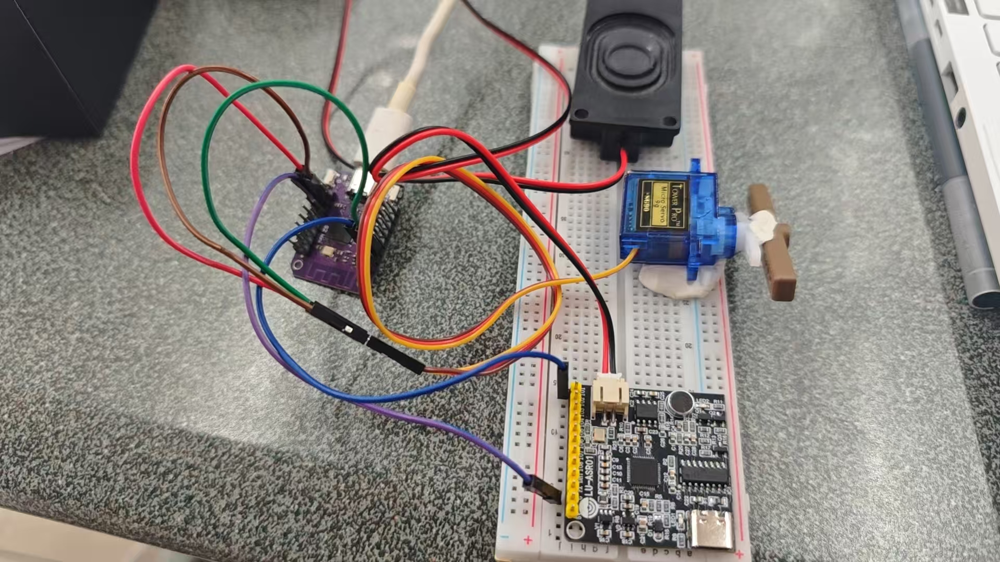

小组创客实践项目，基于声音感应实现自动控制功能装置制作
本次中期项目为小组合作制作声控开关装置。装置依靠声音信号触发电路，实现电路通断控制，可应用于简易照明、小型负载控制等场景。整体结构简单、实用性强，综合运用了电路原理、电子焊接、元器件搭配等前期所学知识。
项目从方案构思、电路设计、元器件选型、组装焊接到通电调试，全程由小组分工完成，完成了一套完整的功能样机。
以下为本项目所使用的全部材料、电子元器件及工具：
声控开关主要依靠声音采集元件接收外界声响，将声波信号转换为电信号。微弱电信号经过放大、整形后，触发后续开关电路，实现负载接通；延时一段时间后电路自动断开，完成一次声控触发过程。
整体分为声音采集模块、信号放大模块、开关执行模块三大部分，各模块配合工作，实现“有声即启动、无声延时关闭”的基本效果。
💡 制作要点：焊接时保证焊点牢固圆润，通电前务必检查线路，避免短路损坏元件。
包含元器件摆放、焊接过程、调试现场、最终成品等照片：


本次中期声控开关项目，将课堂上学到的电路知识、焊接技能综合运用到实际制作中。小组分工协作，从设计、选材、组装到调试，一步步完成目标装置。
制作过程中也发现了实操经验不足、细节考虑不周全等问题，通过不断排查与修改最终实现预期功能。本次项目锻炼了动手能力、团队协作与问题排查能力，为后续综合项目积累了宝贵经验。